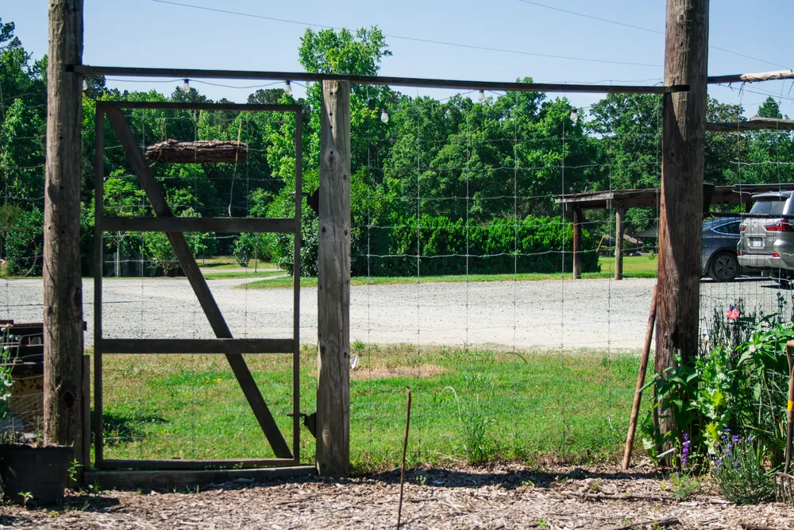
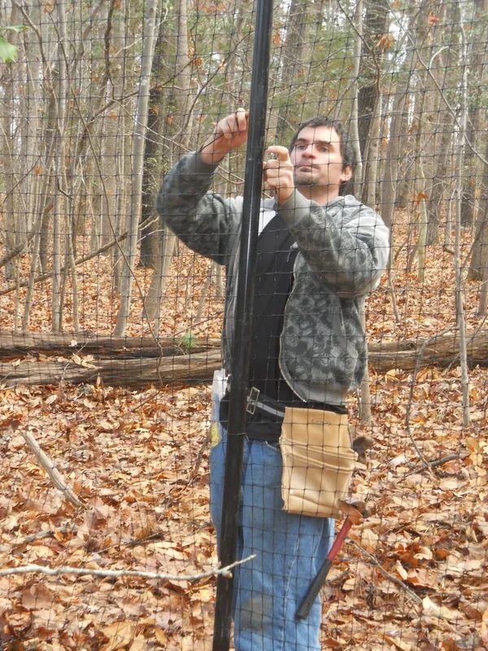
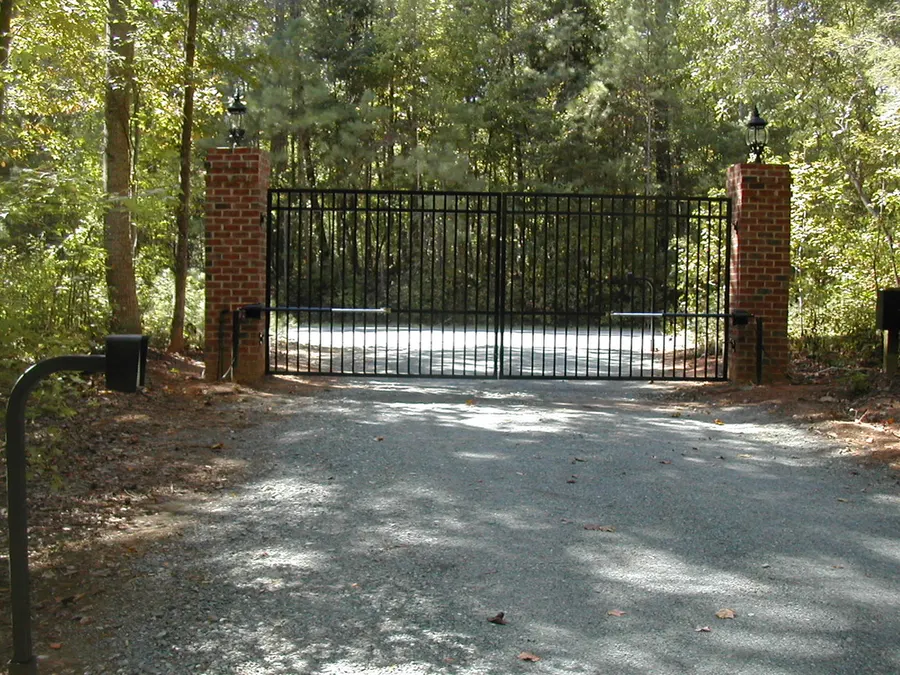
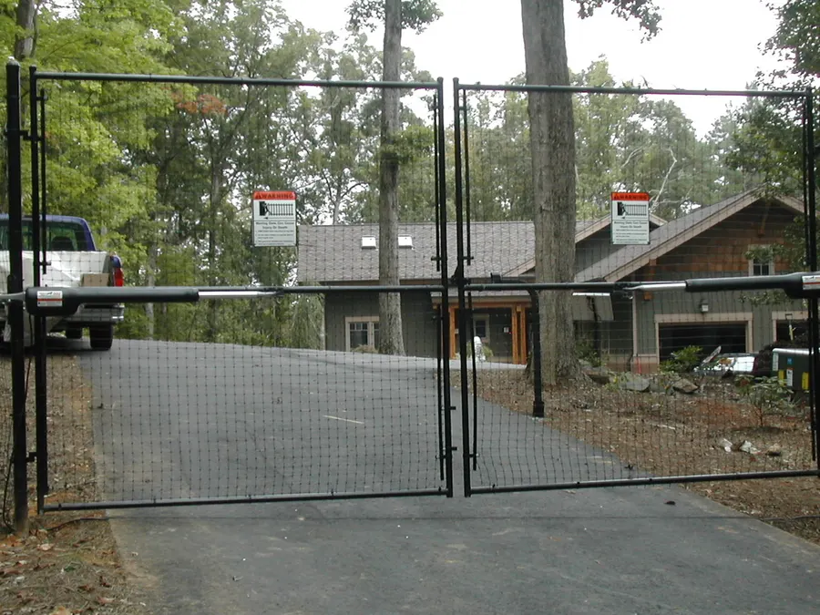
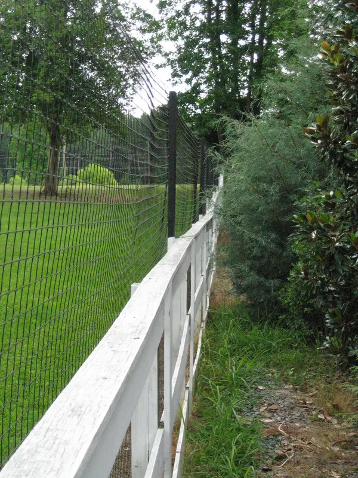
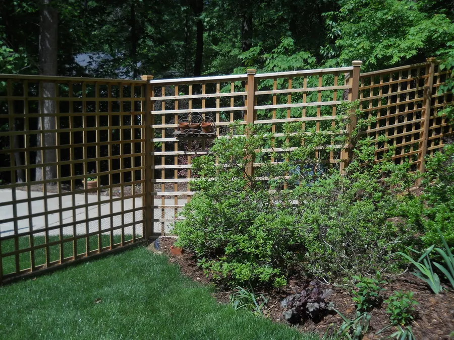
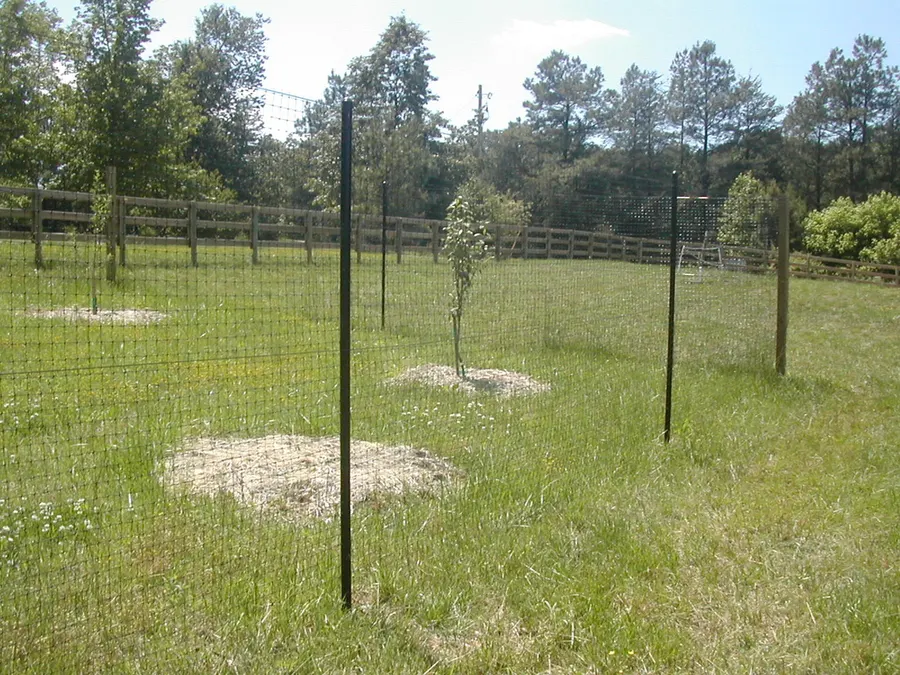
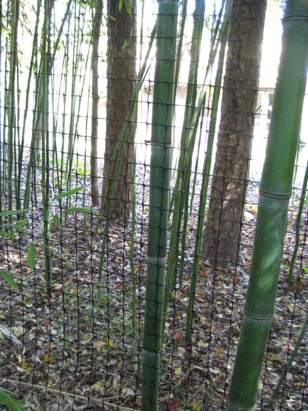
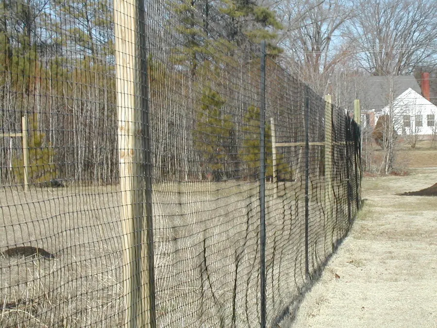

Past Experience
Deer Fences
For homeowners losing the battle with deer, a good fence changes everything. Matthew installed reasonably priced, reliable, and genuinely attractive deer fences around portions of properties — or entire ones — using materials suited to both suburban and rural landscapes.

Why it mattered
Two challenges shaped much of this work: helping gardens thrive under the shade of our mature trees, and coping with the ever-increasing impact of deer browsing on both natural and ornamental plantings. A well-built fence protected those investments — and reduced the chance of tick-borne disease close to the house.
A few of the fences







What a fence made possible
With deer kept out, homeowners could finally grow the plants they'd given up on — native shrubs and pollinator-friendly perennials, hydrangeas, hostas, daylilies, roses, vegetable gardens, fruit trees, and so much more. The list was long, and the payoff was a garden you could actually enjoy.